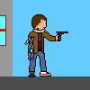

ISN 2016-2017
Site de Lucas GHENIA
Les pages ISN
Les pages ISN
Accueil
Mes Compétences
Ma Progression
Diaporama
Liens utiles
Liens utiles
Wikipedia
Comment refaire ce menu
Mes adresses mail
Mes adresses mail
ghenia.lucas@outlook.fr
rigosR@hotmail.fr
Bienvenue sur mon site!

- Coucou!
Vous pouvez naviguer entre les différentes pages via le menu ci-dessus.